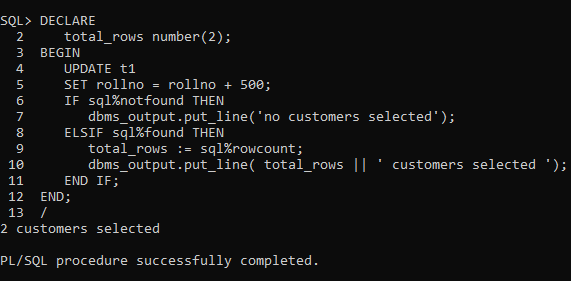
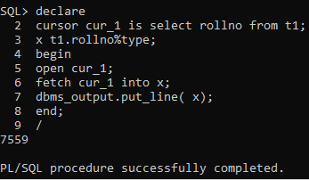

A CODING BLOG BY HIMANSHU CHOPRA...
For Tutorials On DBMS You Can Visit These Buttons
A CODING BLOG BY HIMANSHU CHOPRA...
For Tutorials On DBMS You Can Visit These Buttons
CURSORS
A cursor is a pointer to this context area. PL/SQL controls the context area through a cursor. A cursor
holds the rows (one or more) returned by a SQL statement. The set of rows the cursor holds is referred
to as the active set.
You can name a cursor so that it could be referred to in a program to fetch and process the rows
returned by the SQL statement, one at a time. There are two types of cursors −
1.Implicit cursors
2.Explicit cursors
Implicit cursors are automatically created by Oracle whenever an SQL statement is executed, when there
is no explicit cursor for the statement. Programmers cannot control the implicit cursors and the
information in it.
Whenever a DML statement (INSERT, UPDATE and DELETE) is issued, an implicit cursor is associated with
this statement. For INSERT operations, the cursor holds the data that needs to be inserted. For UPDATE
and DELETE operations, the cursor identifies the rows that would be affected.
In PL/SQL, you can refer to the most recent implicit cursor as the SQL cursor, which always has
attributes such as %FOUND, %ISOPEN, %NOTFOUND, and %ROWCOUNT. The SQL cursor has additional attributes,
%BULK_ROWCOUNT and %BULK_EXCEPTIONS, designed for use with the FORALL statement.
Example –

Explicit cursors are programmer-defined cursors for gaining more control over the context area. An
explicit cursor should be defined in the
declaration section of the PL/SQL Block. It is created on a SELECT Statement which returns more than one
row.
The syntax for creating an explicit cursor is −
CURSOR cursor_name IS select_statement;
Working with an explicit cursor includes the following steps −
Declaring the cursor for initializing the memory
Opening the cursor for allocating the memory
Fetching the cursor for retrieving the data
Closing the cursor to release the allocated memory
Declaring the Cursor
Declaring the cursor defines the cursor with a name and the associated SELECT statement. For example
−
CURSOR c_customers IS
SELECT id, name, address FROM customers;
Opening the Cursor
Opening the cursor allocates the memory for the cursor and makes it ready for fetching the rows returned
by the SQL statement into it. For
example, we will open the above defined cursor as follows −
OPEN c_customers;
Fetching the Cursor
Fetching the cursor involves accessing one row at a time. For example, we will fetch rows from the
above-opened cursor as follows −
FETCH c_customers INTO c_id, c_name, c_addr;
Closing the Cursor
Closing the cursor means releasing the allocated memory.
For example, we will close the above-opened
cursor as follows −
CLOSE c_customers;
Example –
